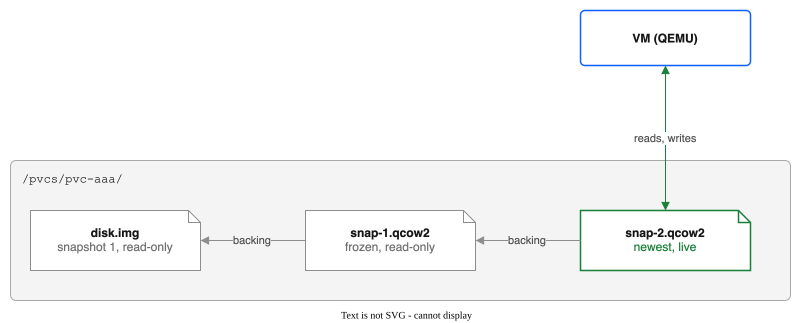
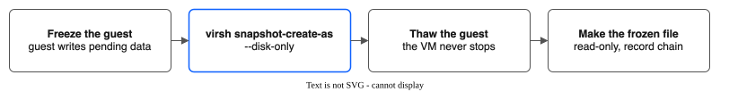
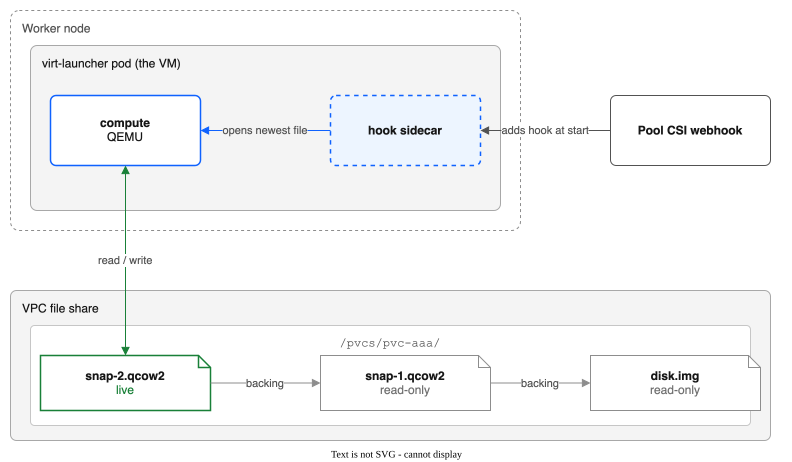

Instant VM snapshots¶
Status: built, Experimental. Tested by hand on rovslab on 21 October 2026 (results below). The build plan is docs/specs/2026-10-21-instant-vm-snapshots.md; the limits are in KNOWN-LIMITATIONS.md.
Turning it on¶
- Install the driver with
vmSnapshots.method=auto(the default), webhooks on, andvmSnapshots.enableSidecarGate=true. After each install and upgrade, a hook Job turns on the KubeVirtSidecarfeature gate (step 2) for you. - Without the Helm value, turn on the gate by hand. On OpenShift, add one operation to the
kubevirt.kubevirt.io/jsonpatchannotation ofHyperConverged. Keep any operations that are there already:Red Hat does not support this setting, andcur=$(oc get hyperconverged kubevirt-hyperconverged -n openshift-cnv -o jsonpath='{.metadata.annotations.kubevirt\.kubevirt\.io/jsonpatch}') new=$(echo "${cur:-[]}" | jq -c '. + [{"op":"add","path":"/spec/configuration/developerConfiguration/featureGates/-","value":"Sidecar"}]') oc annotate --overwrite hyperconverged kubevirt-hyperconverged -n openshift-cnv kubevirt.kubevirt.io/jsonpatch="$new"HyperConvergedthen reportsTaintedConfiguration=True. - Take a snapshot from the console's VM Snapshots tab, or with a
VirtualMachineSnapshot. The VolumeSnapshots are ready at once.
The console's Pools and Snapshots pages show how the driver takes VM disk snapshots: instant, copy, or unknown. The box says instant only when the driver is set to auto and the gate is on, and it lists the VMs that have instant snapshots. It reads the driver's setting from the ConfigMap ibm-vpc-file-pool-csi-settings, which the chart renders; a driver that does not publish it shows "unknown".
To stop: delete the VMs' snapshots (kubectl pool-snapshots flatten <vm> -n <namespace> for each VM), then remove the operation from the annotation. A VM with snapshots does not start while the gate is off. The chart never removes the gate, not when you uninstall and not when you set vmSnapshots.enableSidecarGate=false, so turning it off is always a step you take on purpose.
Choosing a setting¶
Three combinations of the two Helm values are possible. Pick one for each cluster.
| Setting | What happens | Benefit | Consequence |
|---|---|---|---|
vmSnapshots.method=copy |
Every VM disk snapshot is a full copy of the disk file. There is no VM hook webhook. | Touches nothing else on the cluster. No webhook, no feature gate. | Slow on big disks: a copy of a 30 GB disk with 2 GB used took 165 s (restore test below). Uses as much storage as the disk holds. |
vmSnapshots.method=auto, gate off (enableSidecarGate=false, the default) |
Snapshots are copies, as with copy. The driver also adds the VM hook webhook. |
None over copy. |
One more moving part and no gain. |
vmSnapshots.method=auto, gate on (enableSidecarGate=true) |
Snapshots are instant: a new overlay file, nothing copied. 2 s for a running Linux VM with the guest frozen (test below). | Fast, and almost no extra storage. | Red Hat does not support the gate, and HyperConverged reports TaintedConfiguration=True. The gate is cluster-wide: anyone who can create or edit a VM can add a hook sidecar container to that VM's pod (see SECURITY.md). The chart never turns the gate off, not even on uninstall, because VMs with instant snapshots cannot start without it. |
Existing VMs. Turning the gate on does not change a VM by itself. The driver adds its hook only to a VM whose disks have a snapshot chain, and only while the gate is on. A VM that was never snapshotted by the driver is left alone. This guide has not checked whether KubeVirt restarts its own components when the feature gate list changes.
Shared clusters. On a cluster that also runs other teams' VMs, use copy unless those teams agree to the gate. The gate is the only setting in this table that changes the cluster, not just the driver.
In one paragraph¶
A VM disk on a pool is one file, disk.img, in the volume's folder on a VPC file share. To take a snapshot, the driver tells QEMU (the program that runs the VM) to stop writing to that file and to send all new writes to a new, small file next to it. The old file is now the snapshot. Nothing is copied, so this takes seconds for any disk size. This is the same method VMware uses for its snapshots.
To see it step by step, open the interactive picture in a browser.
Why the driver does it this way¶
- A plain copy cannot be instant. Today the driver copies the whole disk for each snapshot, at 20 MB/s by default: about 7 hours for 500 GB.
- The file share cannot clone a file instantly. The shares accept NFS 4.2, but they refuse a file clone (
cp --reflink: "Operation not supported", rovslab, 21 Oct). - Share-level VPC snapshots are not used. They cover every volume on the share, not one disk.
How it works¶
The files¶
Before any snapshot:
After two snapshots:
/pvcs/pvc-aaa/disk.img ← snapshot 1 (frozen, read-only)
/pvcs/pvc-aaa/snap-1.qcow2 ← changes after snapshot 1; frozen at snapshot 2 (read-only)
/pvcs/pvc-aaa/snap-2.qcow2 ← changes after snapshot 2; the VM writes here now
This set of files is a chain. Each file holds only the parts of the disk that changed after the file before it.

Writes and reads¶
- Writes always go to the newest file.
- Reads: QEMU looks in the newest file first. If that part of the disk was not written since the snapshot, it looks in the file before, and so on down to
disk.img. Each file has a small map of which parts it holds, so this is fast. A long chain makes reads a little slower, so the driver allows at most 16 snapshot files per disk.
Taking a snapshot¶
- The driver checks that the VM's user (UID 107) owns the disk's top file, because only the owner can make it read-only (step 4). If not, the snapshot fails here with a message, and nothing is changed. If a step after the new file starts fails, the driver merges the new file back and deletes it, so the chain is as it was.
- The guest is frozen for a moment, so the guest writes its pending data to disk. OpenShift does this itself when you take a VM snapshot from the console. Otherwise the driver asks the guest agent to freeze.
- The driver runs one command in the VM's pod:
virsh snapshot-create-as ... --disk-only. QEMU starts the new file and switches to it. - The guest is thawed. The VM never stops.
- The driver makes the frozen file read-only and records the chain.

Deleting a snapshot (merge)¶
A file in the chain cannot just be deleted, because the newer files depend on it. Instead, the driver makes the deleted snapshot's file writable, merges the next file up into it (virsh blockcommit), then deletes the next file. Only the changed parts are copied, so a merge takes about as long as copying the changes, not the whole disk. QEMU merges while the VM runs, in the background: the driver starts the merge, checks on it at each retry of the delete, and finishes it when QEMU is ready. While it runs, the SubVolume's status.chainOperation names it, and no other snapshot or merge of that disk starts. If the merge fails, the driver stops it and makes the snapshot's file read-only again. If the VM stops during a merge, a Job does the merge next. If the VM is stopped, a Job does the same with qemu-img commit.
Restoring a snapshot¶
OpenShift restores a snapshot by making a new disk. The driver makes that disk with one sparse copy of the snapshot's view (qemu-img convert). This is a copy of the disk, so it is not instant.
Restarts and moves: the hook¶
KubeVirt, which starts the VM, always opens disk.img as a plain file. On its own, it does not know about the chain. If it opened disk.img after a restart, every write since the first snapshot would be missing.
So the driver adds a hook to each VM with a pool disk. A hook is a small extra container in the VM's pod. KubeVirt calls it just before the VM starts, and it changes how the VM opens its disks: "open the newest file in the chain, as a qcow2 file". QEMU then follows the chain down to disk.img.

- The driver adds the hook by itself when a VM that has snapshots starts. A VM without snapshots is not changed. You make VMs the normal way, from the standard catalog, with the pool's StorageClass.
- A running VM does not need the hook to take a snapshot or to live-migrate. The hook is only needed at the next start.
- The hook needs the KubeVirt
Sidecarfeature gate. It is off by default. On OpenShift you turn it on with an annotation on theHyperConvergedresource. Red Hat does not support this setting, and the cluster then reportsTaintedConfiguration. On ROVS, IBM's add-on manages that resource.
Safety: frozen files are read-only¶
A write to a frozen file would damage every snapshot built on it. So the driver makes each frozen file read-only. If a VM with a chain ever starts without the hook, QEMU cannot open disk.img for writing, and the VM does not start. It fails safe instead of starting on old data.
What was tested (rovslab-prod-eude, ROVS 4.21, OpenShift Virtualization 4.21.17, 21 Oct 2026)¶
All tests were by hand, with virsh in the VM's pod and the hook from a ConfigMap. The driver code did not change.
| Test | Linux (CentOS Stream 9) | Windows Server 2022 |
|---|---|---|
| Snapshot of a running VM, guest frozen | 2 s | 4.6 s (VSS) |
| One snapshot of 2 disks at once, frozen | 2 s | not tested |
| Restart with the chain | data kept | data kept |
| Live migration with the chain | succeeded | succeeded |
| Merge a middle snapshot, VM running | 2 s | not tested |
| Merge the newest file, VM running | 4 s | 2 s |
Restart after all merges, plain disk.img |
data kept | data kept |
| Restore 2 frozen disks to a new VM | booted; counters on both disks matched (106 and 106); copy of a 30 GB disk with 2 GB used: 165 s | not tested |
Also seen:
- An OpenShift VM snapshot with today's driver: OpenShift froze the guest for 1 second, then the driver froze it again 3 seconds later for one disk only. That is the wrong-moment defect this design removes.
- libvirt writes absolute paths for the chain (/var/run/kubevirt-private/vmi-disks/<volume>/...). That path is the same in every VM pod. Driver Jobs that work on a chain mount the volume at the same path.
- libvirt does not delete files after a merge. The driver must.
Lab checks, also 21 Oct:
- KubeVirt keeps the read-only bits on frozen files when it starts a VM. Without the hook, a VM with a chain does not start ("Permission denied" on disk.img).
- A live migration straight after a snapshot keeps the chain, even without the hook.
- With the Sidecar gate off, KubeVirt refuses to start a VM that has the hook. So the driver adds the hook only to VMs that have snapshots, and only while the gate is on.
- A merge into a read-only file fails, so the driver makes that file writable for the merge.
Not tested yet: Windows with two disks, and the driver code end to end (the tests above ran the same commands by hand).
How the driver does it¶
- Snapshot, VM running:
CreateSnapshotmakes the new file next to the top file with a name-only backing reference (qemu-img create -F <format> -b <top>), thenvirsh snapshot-create-as --reuse-externalin the VM pod. If OpenShift has frozen the guest, the driver does not freeze again; otherwise it asks the guest agent to freeze. The driver asks the guest agent itself whether the guest is frozen (guest-fsfreeze-status), because the VMI'sstatus.fsFreezeStatusshows OpenShift's freeze late, and a frozen guest agent refuses a second freeze. It records the chain in the SubVolume'sstatus.diskChainand the new top file in the VMI annotationstorage.ibmcloud.io/disk-tops, then returnsReadyToUse: true. - Snapshot, VM stopped: a Job in KubeVirt's virt-launcher image makes the new file. While it runs, the SubVolume's
status.chainOperationnames it, and the webhook does not let the VM start. - Delete: the driver merges the next newer file into the snapshot's file (
virsh blockcommit --keep-relative, orqemu-img commitin a Job when the VM is stopped). The snapshot that was held in the newer file is held in the merged file from then on (status.chainFile). - Restore: a Job converts the snapshot's file, through its backing files, into the new volume's
disk.img. - Start: the webhook adds the hook only to a VM whose disks have a chain, and only while the
Sidecargate is on. The hook script is in the ConfigMapibm-vpc-file-pool-vm-hookin the VM's namespace; the controller writes it. - Safety: frozen files are read-only. The Jobs mount only the volume folders they work on, check every backing reference of the chain first (a plain file name,
disk.imgas raw, snapshot files as qcow2, no external data file), and get no API credentials. Anyone who can write to a volume can put files in its folder, so these checks keep such a file from reaching another volume on the share.